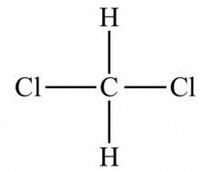
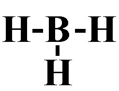
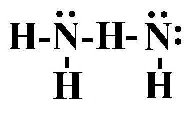
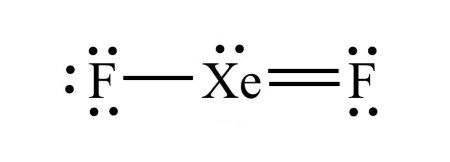

An empirical formula represents the simplest ratio of elements present in a compound. It shows the relative number of atoms of each element in a compound without specifying the actual number of atoms. To get the empirical formula you need to divide the subscripts in the equation (C6H12O6) by their greatest common divisor. In this case 2 and 6 are divisible by 6, which gives CH2O as the empirical formula.
2) Which of the following would have the highest lattice energy?
A) Na2O
B) MgCl2
C) Li2O
D) MgO*
There are two parts that are involved in lattice energy. One is the charge on the ions (this is the bigger priority), and the other is the distance between the ions. This is only testing on knowing that the larger the charge on the ions, the larger the lattice energy. Since Mg has the highest charge, MgO will have the highest lattice energy.
3) An ionic bond is best described as
A) A bond between two metals
B) A bond formed when electrons are shared between two atoms
C) A bond between two non-metals
D) A bond formed when electrons are transferred from one atom to another*
A covalent bond is formed when two atoms share electrons in order to achieve a stable electron configuration. In a covalent bond, the atoms involved have similar electronegativity, meaning they have similar tendencies to attract electrons. This sharing of electrons allows both atoms to fill their outermost energy levels and achieve greater stability.
An ionic bond is formed when electrons are transferred from one atom to another, resulting in the formation of ions. In an ionic bond, one atom donates electrons to another atom, resulting in the formation of a positively charged ion (cation) and a negatively charged ion (anion). The attraction between these opposite charges holds the ions together and forms an ionic bond.
4) What is the empirical formula for a sulfur oxide (compound composed of sulfur and oxygen) that is 80.0% sulfur by mass?
A) SO2
B) S3O
C) S2O*
D) SO
Since the sulfur oxide compound is is 80.0% sulfur by mass, it will be 100% - 80.0% = 20.0 % oxygen by mass.
Assuming a 100 g sample gives us: 80.0 g sulfur and 20.0 g oxygen.
Next convert those grams to moles. 80.0 g S x \( \frac{1 mol S}{32.06 g S} \) = 2.50 mol S 20.0 g O x \( \frac{1 mol O}{16.00 g O} \) = 1.25 mol O
Then divide by the lower of the two mol amounts, and get the lowest whole number ratio.
5) Determine the name for CoCl2·6H2O
A) Cobolt (II) chloride hexahydrate*
B) Cobolt (II) chloride
C) Cobolt (II) chloride heptahydrate
D) Cobolt chloride hexahydrate
CoCl2·6H2O is an ionic compound and a hydrate. To name the ionic compound portion give the name of the cation followed by the name of the anion. In this case that would be cobolt (II) chloride. Since cobalt is a variable charge metal The hydrate portion of the formula is named based on the number of water molecules. Since this hydrate has 6 water molecules in its formula the prefix 'hexa-' is used before the word 'hydrate'. Thus the correct name is cobolt (II) chloride hexahydrate.
6) What is the name of the compound Ba3(ClO3)2?
A) Tribarium dichlorate
B) Barium chlorate*
C) Barium chloroxide
D) Barium chloride
Ba3(ClO3)2 is an ionic compound because it contains a polyatomic ion (ClO3-). Thus to name Ba3(ClO3)2, you need to say the name of the fixed charge metal followed by the name of the polyatomic anion. Therefore the correct name is Barium chlorate.
7) The statement "samples of a compound will always contain the same proportion of elements by mass" belongs to:
A) The Law of Conservation of Mass
B) The Law of Definite Proportions*
C) Dalton's Atomic Theory
D) The Law of Multiple Proportions
Dalton's Atomic Theory: Matter is composed of small indestructible particles.
The Law of Conservation of Mass: In a chemical reaction, matter is neither created nor destroyed.
The Law of Multiple Proportions: If two elements form more than one compound, the ratios of the masses of the second element that combine with a fixed mass of the first element will always be ratios of small whole numbers.
The Law of Definite Proportions: Samples of a compound will always contain the same proportion of elements by mass.
8) What is the formula for the phosphate ion?
A) PO23-
B) PO33-
C) PO43-*
D) PO42-
9) Calculate the molar mass for Sn(ClO4)2.
A) 436.3 g/mol
B) 317.6 g/mol*
C) 221.6 g/mol
D) 218.2 g/mol
To calculate the molar mass for Sn(ClO4)2, take the number of each element from the periodic table and multiply it by the molar mass of the element, then sum all the molar masses from each element. Sn: 118.71 g/mol x 1 = 118.71 g/mol Cl: 35.45 g/mol x 2 = 70.90 g/mol O: 16.00 g/mol x 8 = 100 g/mol Total: 317.6 g/mol
10) What is the name of the following polyatomic ion? HPO42-
A) phosphate
B) dihydrogen phosphate
C) phosphite
D) hydrogen phosphate*
11) Calculate the molar mass for C8H16O.
A) 113.1 g/mol
B) 128.2 g/mol*
C) 29.02 g/mol
D) 112.2 g/mol
To calculate the molar mass for C8H20O, take the number of each element from the periodic table and multiply it by the molar mass of the element, then sum all the molar masses from each element. C: 12.01 g/mol x 8 = 96.08 g/mol H: 1.008 g/mol x 20 = 16.13 g/mol O: 16.00 g/mol x 1 = 16.00 g/mol Total: 128.2 g/mol
12) What is the formula for the following acetate ion?
A) C3H2O3-
B) C2H2O2-
C) C2H3O2-*
D) CHO-
13) What is the name of the ClO2- ion?
A) hypochlorite
B) perchlorate
C) chlorate
D) chlorite*
14) Give the name for SF6.
A) Sulfur hexafluoride*
B) Sulfur heptafluoride
C) Sulfur fluoride
D) Sulfur (II) fluoride
Both S and F are nonmetals, so we will need to put a Greek prefix before the name of each element, then give the second element an -ide ending. However, mono- is dropped from the beginning in cases where there is only 1 of the first element in the compound. Since there are 1 S and 6 F, the name is Sulfur hexafluoride.
15) What is the name of the acid H3PO4?
A) Phosphoric acid*
B) Hydrophosphoric acid
C) Hydrophosphorous acid
D) Phosphorous acid
16) Which of the following shows the best Lewis structure for CH2Cl2?
A)
B) *
C) 
D)
Carbon has 4 valence electrons, hydrogen has 1, and chlorine has 7. Carbon and chlorine need an octet, and hydrogen needs a duet. is the only structure where there are the correct number of electrons (4 + 1 + 1 + 7 + 7 = 20), and where carbon and chlorine get an octet, and hydrogen gets a duet
17) Which of the following bonds is least polar?
A) H-I*
B) H-F
C) HCl
D) HBr
The least polar bond will be the one with the smallest dipole moment.
The smallest dipole moment will be between the two elements that have the smallest difference in electronegativity. Generally speaking the elements with the smallest difference in electronegativity will be closest on the periodic table. However, you should remember that hydrogen has an electronegativity that is around that of metalloids. In other words, it is low for a nonmetal.
18) Which of the following shows the best Lewis structure for CH3OH?
A)
B) *
C)
D)
19) A triple covalent bond contains how many electrons?
A) 3
B) 8
C) 6*
D) 4
A single covalent bond contains 2 shared electrons. A double covalent bond contains 4 shared electrons. A triple covalent bond contains 6 shared electrons.
20) Which of the following shows the best Lewis structure for BH3?
A)
B)
C)
D) *
21) Which of the following elements is the most electronegative.
A) Bromine
B) Potassium
C) Lithium
D) Fluorine*
The trend for electronegativity is that it increases as you go up and to the right on the periodic table. However, noble gasses have an electronegativity of approximately zero, so fluorine has the highest electronegativity. Thus in this case, fluorine is the most electronegative.
22) Which compound has the smallest dipole moment in the gas phase?
A) HCl
B) LiF
C) Cl2*
D) CO
The smallest dipole moment will be between the two elements that have the smallest difference in electronegativity. Generally speaking the elements with the smallest difference in electronegativity will be closest on the periodic table. However, you should remember that hydrogen has an electronegativity that is around that of metalloids. In other words, it is low for a nonmetal.
23) Identify the shortest bond.
A) Triple covalent bond*
B) All bonds are the same length
C) Double covalent bond
D) Single covalent bond
Triple bonds are stronger than double bonds, which are stronger than single bonds.
24) Place the following bonds in order of increasing ionic character.
Si-P Si-Cl Si-S
A) Si-P < Si-Cl < Si-S
B) Si-Cl < Si-P < Si-S
C) Si-P < Si-S < Si-Cl*
D) Si-Cl < Si-S < Si-P
The bond with the lowest ionic character will be the between elements closest on the periodic table. Since Si and P are the closest on the periodic table, they will have the lowest ionic character. Since Si and S are the next closest, they will have the second to lowest ionic character. Si and Cl are the furthest on the periodic table, so they will have the largest ionic character.
25) Which of the following shows the best Lewis structure for N2H4?
A) *
B)
C)
D) 
26) Which of the following shows the best Lewis structure for NOF?
A) *
B)
C)
D)
27) Which of the following shows the best Lewis structure for XeF2?
A)
B) *
C) 
D)
Xe has 8 valence electrons and F has 7 valence electrons. Xe (being below the 2nd period) can get more than an octet, but F needs an octet. The formal charges need to be as close to zero as possible. is the only structure with the correct number of electrons (8 + 7 + 7 = 22) where the formal charges on all elements is zero.
28) What is the VSEPR shape (electron domain geometry) of SF6?
A) Trigonal planar
B) Trigonal bipyramidal
C) Tetrahedral
D) Octahedral*
Since the Lewis structure of SF6 has 6 electron domains, the VSEPR shape (electron domain geometry) of SF6 is octahedral.
29) Give the molecular shape for XeF6
A) Trigonal bipyramid
B) Trigonal planar
C) Octahedral*
D) Square planar
Step 1: Draw the Lewis Structure. Step 2: Count the number of electron domains: the number of lone pairs and number of atoms bonded to Xe. You should get 6 electron domains, of which 0 are lone pairs. 6 electron domains and 0 are lone pairs corresponds to an octahedral molecular shape.
30) Give the electron domain geometry for CO2
A) Tetrahedral
B) Bent
C) Trigonal planar
D) Linear*
Step 1: Draw the Lewis Structure. Step 2: Count the number of electron domains: the number of lone pairs and number of atoms bonded to C. You should get 2 electron domains. 2 electron domains corresponds to a linear electron domain geometry.
31) Identify the number of electron groups (electron domains) around a molecule with sp3d2 hybridization.
A) 3
B) 2
C) 6*
D) 4
# Electron domains
Hybridization
2
sp
3
sp2
4
sp3
5
sp3d
6
sp3d2
32) What is the molecular shape of KrF2?
A) Linear*
B) T-shape
C) See saw (saw horse)
D) Octahedral
Since the Lewis structure of KrF2 has 5 electron domains, 3 of which are lone pair, the molecular shape of KrF2 is linear.
33) What is the molecular shape of PF5?
A) Trigonal bipyramidal*
B) Bent
C) See saw (saw horse)
D) Octahedral
Since the Lewis structure of PF5 has 5 electron domains, none of which are lone pairs, the molecular shape of PF5 is trigonal bipyramidal.
34) Use the molecular orbital diagram shown below to determine which of the following are the MOST stable.
A) BC2-
B) C22-*
C) NC+
D) B2-
Step 1: Count the number of valence electrons in the molecule. B2-: 7 valence electrons NC+: 8 valence electrons BC2-: 9 valence electrons C22-: 10 valence electrons Step 2: Fill in the molecular orbital diagram from the bottom up, but make sure to follow Hund's rule (one electron in each orbital in degenerate orbitals before a second with an opposing spin) when filling pi molecular orbitals. Step 3: Determine the bond order. Since after 4 valence electrons, the rest go into bonding orbitals, the highest number of electrons will have the highest bond order. Bond order = (electrons in bonding orbitals - electrons in antibonding orbitals)/2 Bond order for B2-: (5-2)/2 = 1.5 Bond order for NC+: (6-2)/2 = 2 Bond order for BC2-: (7-2)/2 = 2.5 Bond order for C22-: (8-2)/2 = 3 Since C22- has the highest bond order, it will be the MOST stable.
35) Use the molecular orbital diagram shown below to determine which of the following are the paramagnetic (there may be more than one answer).
A) BC2-*
B) C22-
C) NC+
D) B2-*
Step 1: Count the number of valence electrons in the molecule. B2-: 7 valence electrons NC+: 8 valence electrons BC2-: 9 valence electrons C22-: 10 valence electrons Step 2: Fill in the molecular orbital diagram from the bottom up, but make sure to follow Hund's rule (one electron in each orbital in degenerate orbitals before a second with an opposing spin) when filling pi molecular orbitals. Step 3: Determine if there are any unpaired electrons in the molecular orbital diagram. B2-: 7 valence electrons, and odd numbers will always have unpaired electrons = paramagnetic NC+: 8 valence electrons, the pi 2p orbitals get filled, leaving no unpaired electrons = diamagnetic BC2-: 9 valence electrons, and odd numbers will always have unpaired electrons = paramagnetic C22-: 10 valence electrons, the last 2 electrons go into sigma 2p orbital filling it, which means there are no unpaired electrons = diamagnetic
36) What is the molecular shape of BF3?
A) Tetrahedral
B) Trigonal planar*
C) Linear
D) bent
Since the Lewis structureof BF3 has 3 electron domains, none of which are lone pairs, the molecular shape of BF3 is trigonal planar.
37) Use the molecular orbital diagram shown below to determine which of the following are the MOST stable.
A) F2
B) NeF
C) F2+
D) FO+*
Step 1: Count the number of valence electrons in the molecule. FO+: 12 valence electrons F2+: 13 valence electrons F2: 14 valence electrons NeF: 15 valence electrons Step 2: Fill in the molecular orbital diagram from the bottom up, but make sure to follow Hund's rule (one electron in each orbital in degenerate orbitals before a second with an opposing spin) when filling pi molecular orbitals. Step 3: Determine the bond order. Since after 10 valence electrons, the rest go into anti-bonding orbitals, the lowest number of electrons will have the highest bond order. Bond order = (electrons in bonding orbitals - electrons in antibonding orbitals)/2 Bond order for FO+: (8-4)/2 = 2 Bond order for F2+: (8-5)/2 = 1.5 Bond order for F2: (8-6)/2 = 1 Bond order for NeF: (8-7)/2 = 0.5 Since FO+ has the highest bond order, it will be the MOST stable.
38) What is the molecular shape of H2O?
A) Trigonal pyramidal
B) Tetrahedral
C) Trigonal planar
D) Bent*
Since the Lewis structureof H2O has 4 electron domains, 2 of which are lone pairs, the molecular shape of H2O is bent.
39) Which of the following compounds is nonpolar?
A) H2O
B) HF
C) HCN
D) SF6*
SF6 is octahedral shaped, which is a symmetrical shape. That means the fluorines electronegativities will balance out and SF6 will be nonpolar.
40) What is the VSEPR shape (electron domain geometry) of BH3?
A) Linear
B) Trigonal planar*
C) Bent
D) Tetrahedral
The Lewis structure for BH3 has 3 electron domains, so the VSEPR shape (electron domain geometry) of BH3 is trigonal planar.
41) Is CO2 polar or nonpolar?
A) Nonpolar
B) Polar*
Since CO2 is linear (which is a symmetrical shape), the electronegativities of the two oxygens balance out and CO2 is nonpolar.
42) What is the hybridization on the central atom for OF2?
A) sp3d2
B) sp3d
C) sp
D) sp3*
Step 1: Draw the Lewis Structure. Step 2: Count the number of electron domains: the number of lone pairs and number of atoms bonded to O. You should get 4 electron domains. 4 electron domains corresponds to sp3 hybridization.
# Electron domains
Hybridization
2
sp
3
sp2
4
sp3
5
sp3d
6
sp3d2
43) Which orbitals overlap in the carbon-hydrogen bonds in C2H2?
A) sp3 and s
B) sp2 and s
C) sp and s*
D) p and s
Step 1) Draw the Lewis structure for C2H2. Step 2) Count the number of electron domains on one of the carbons. There are 2 electron domains on each carbon. Step 3) Determine the hybridization of one of the carbons. Since there 2 are electron domains, it is sp hybridized. Step 4) Since the hydrogens only have an s orbital, the bond is between a sp hybridized orbital and an s orbital, thus (sp and s) is the answer.
44) What is the VSEPR shape (electron domain geometry) of PH3?
A) Trigonal planar
B) Linear
C) Tetrahedral*
D) Bent
Since the Lewis structure of PH3 has 4 electron domains, the VSEPR shape (electron domain geometry) of PH3 is tetrahedral.
45) Use the molecular orbital diagram shown below to determine which of the following are the diamagnetic (there may be more than one answer).
A) NeF
B) FO+
C) F2+
D) F2*
Step 1: Count the number of valence electrons in the molecule. FO+: 12 valence electrons F2+: 13 valence electrons F2: 14 valence electrons NeF: 15 valence electrons Step 2: Fill in the molecular orbital diagram from the bottom up, but make sure to follow Hund's rule (one electron in each orbital in degenerate orbitals before a second with an opposing spin) when filling pi molecular orbitals. Step 3: Determine if there are any unpaired electrons in the molecular orbital diagram. FO+: 12 valence electrons, the last 2 electrons go into pi 2p orbitals, which means there are 2 unpaired electrons = paramagnetic F2+: 13 valence electrons, and odd numbers will always have unpaired electrons = paramagnetic F2: 14 valence electrons, the pi 2p orbitals get filled, leaving no unpaired electrons = diamagnetic NeF: 15 valence electrons, and odd numbers will always have unpaired electrons = paramagnetic
46) What is the VSEPR shape (electron domain geometry) of CH4?
A) Trigonal planar
B) Tetrahedral*
C) Linear
D) Bent
Since the Lewis structure of CH4 has 4 electron domains, the VSEPR shape (electron domain geometry) of CH4 is tetrahedral.
47) Is AsF5 polar or nonpolar?
A) Nonpolar*
B) Polar
Since AsF5 is trigonal bipyramidal (which is a symmetrical shape), the electronegativities of the five fluorines balance out and AsF5 is nonpolar.
48) Which of the following compounds is polar?
A) IF5*
B) O2
C) SiS2
D) PF5
IF5 is square planar shaped which is not a symmetrical shape, thus IF5 will be polar.
49) What is the molecular shape of SeF6?
A) Trigonal bipyramidal
B) Trigonal planar
C) Octahedral*
D) Tetrahedral
Since the Lewis structure of SeF6 has 6 electron domains, none of which are lone pairs, the molecular shape of SeF6 is octahedral.

 *
*